地城迴響 · 技能演出第三版
你第三次點名同一件事，所以這次不調參數，先找具體缺陷。 兩個問題都有明確的技術原因，不是「不夠亮」而已。
前兩輪我都拿放大過的特寫去確認效果，那是在證明「仔細找找得到」， 不是「一眼看得出來」——這是前兩次沒改對的原因之一。 這次改用遊戲原本的鏡頭距離，同一畫面並排兩隻敵人，左邊正常、右邊中狀態。
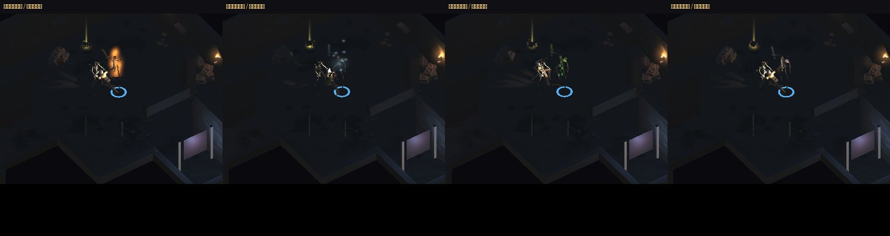
「光暈太陽春」的實際原因：環狀網格沒有 UV。
著色器做的是「用 UV 取貼圖顏色」，而我組環的時候沒給 UV，
所以整條環只取到白貼圖的同一個像素——變成均勻純色、硬邊的色帶。
這跟橘裝光環第一版被你回報「像壞掉」是同一個錯。
現在環的 UV 橫跨帶寬，配一張漸層：外緣（波的前緣）銳利明亮、往內拖長尾，
所以有厚度與柔邊，讀起來是「一道往外推的波」。
「燃燒看不出來」的實際原因：尺寸太小，而且敵人本身沒有任何變化。
火焰片只有 0.34～0.56 個單位、角色高 1.8，在實際尺寸下只有十來個像素；
旁邊多幾個亮點很容易被當成背景火把。
現在連敵人本體一起染色，「那隻在燒」是整個輪廓在講，不用找細節。
火焰也從 4 片增為 7 片、主火焰放大並改成上細下寬的火苗形狀。
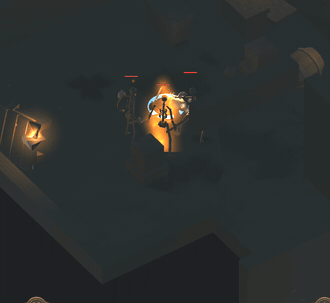
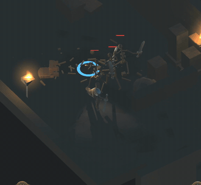
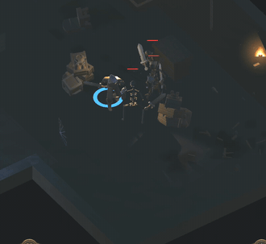
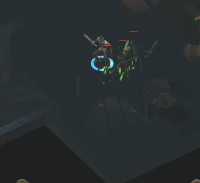
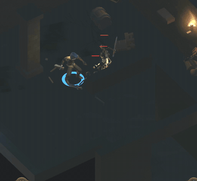
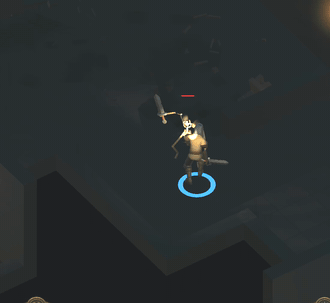
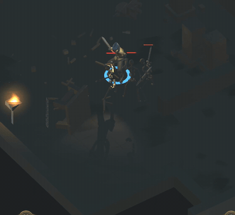
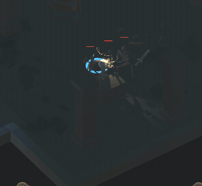
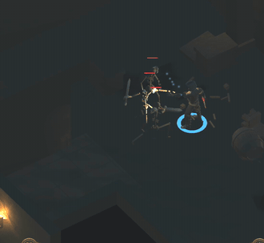
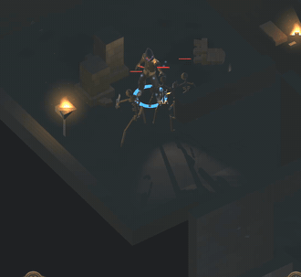
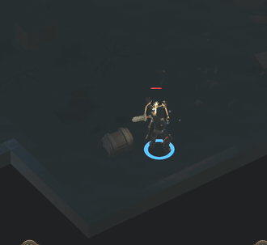
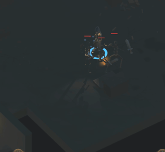
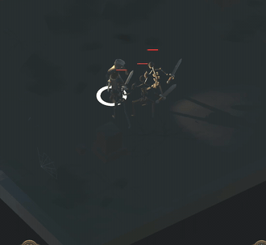
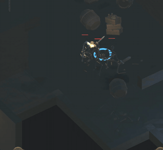
目前特效仍然全部是加法混合的平面貼片（這款沒有粒子系統，也刻意不用 Light 元件——技能若真的照亮環境，「照明是要爭取的資源」這個核心設計就被繞過去）。 在這個框架下，質感的上限大概就是「漸層 + 多層疊加 + 本體染色」。
如果你要更接近商業遊戲的水準，下一步得引入真正的粒子系統或序列幀素材， 那是另一個量級的工作（也會需要美術資源），要的話跟我說，我先評估再動。